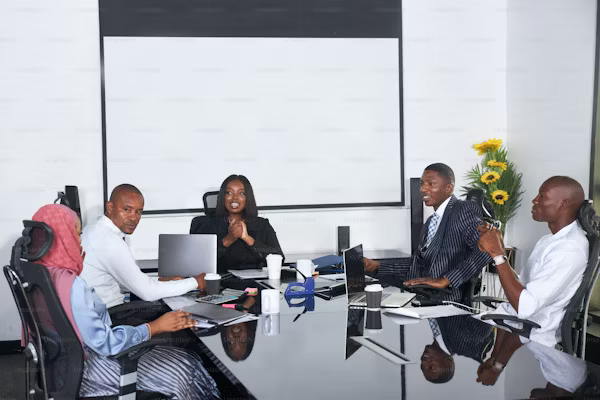

Our Approach
At Gaps'Light Nig Ltd. We work closely with our clients to understand their unique challenges and objectives, and design programs that are practical, engaging, and results-oriented. Our approach includes:
Strategic Planning
Objective Setting: Assisting organizations in defining their vision, mission, and long-term goals.
Market Analysis: Analyzing market trends, competition, and external environment to
inform strategic decisions.
Strategy Development: Formulating strategies to achieve business objectives and gain competitive advantage.
Improvement
Process Optimization: Evaluating and redesigning business processes to enhance efficiency and productivity.
Cost Reduction: Identifying areas for cost savings and implementing measures to reduce operational expenses.
Supply Chain Management: Enhancing the efficiency of the supply chain, from procurement to delivery.
Performance Management
Key Performance Indicators (KPIs): Developing and monitoring KPIs to track organizational performance.
Performance Analysis: Conducting performance assessments to identify strengths, weaknesses, and areas for improvement.
Benchmarking: Comparing performance metrics against industry standards or best practices.
Change Management
Organizational Change: Facilitating organizational change initiatives, including restructuring and culture change.
Communication Plans: Developing communication strategies to ensure smooth
implementation of changes.
Training and Development: Providing training programs to equip employees with the necessary skills and knowledge.
Technology Integration
IT Strategy: Formulating IT strategies that align with business goals.
Digital Transformation: Assisting in the adoption of digital technologies to enhance business operations.
System Implementation: Supporting the selection and implementation of enterprise systems (e.g., ERP, CRM).
 Financial Management
Financial Management
Budgeting and Forecasting: Assisting in the creation of budgets and financial forecasts.
Financial Analysis: Conducting financial analysis to support decision-making.
Cost Management: Implementing cost control measures and identifying cost-saving opportunities.

Human Resources Management
Talent Management: Developing strategies for recruiting, retaining, and developing talent.
Performance Appraisal: Implementing performance appraisal systems and processes.
HR Policies: Creating and updating HR policies to align with organizational goals and legal requirements.
Risk Management
Risk Assessment: Identifying and assessing potential risks to the organization.